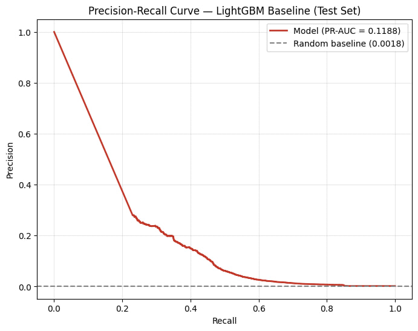
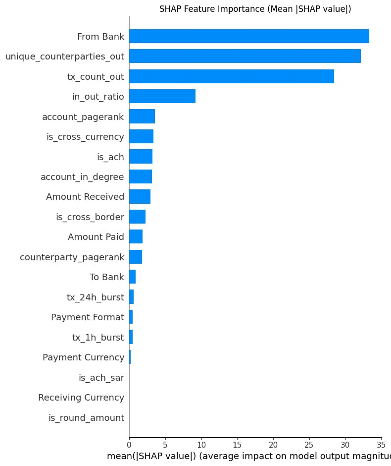
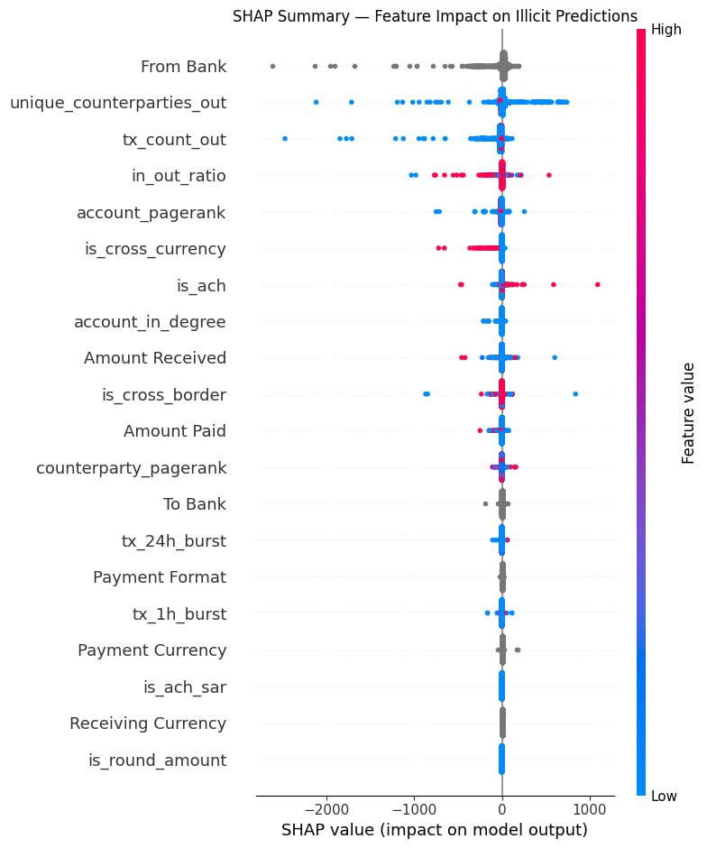
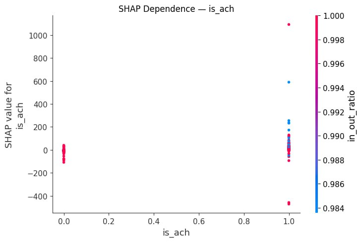

This project analyzes 5,078,345 synthetic cross-border transactions from IBM's AML dataset to detect money laundering, where only 0.10% of transactions are illicit. We used a temporal train/test split, engineered account- and behavior-level features, and trained a class-weighted gradient boosting model, evaluated with precision-recall metrics rather than accuracy, which would be misleading under this level of imbalance.
An initial baseline reached a PR-AUC of 0.0083. After feature and model refinement, a retrained version substantially improved this to PR-AUC 0.1188 (a ~14× improvement) and ROC-AUC 0.8207. This report includes the retrained model's precision-recall curve and full SHAP explainability analysis; a per-pattern recall breakdown and network visualization figures are still being finalized and are marked accordingly below.
Money laundering typically follows three stages: placement (illicit funds enter the financial system), layering (funds are moved through complex transaction chains to obscure their origin), and integration (funds re-enter the economy appearing legitimate). The IBM AML dataset labels transactions according to structural typologies consistent with the layering stage in particular:
| Pattern | Structure |
|---|---|
| Fan-out | One account sends to many accounts |
| Fan-in / Gather | Many accounts send to one account |
| Cycle | Funds route back toward the origin account |
| Scatter / Gather-scatter | Funds are pooled and redistributed, in either order |
| Bipartite | Dense many-to-many transfers between two account clusters |
| Stack | Sequential pass-through chain of accounts, no loop back |
We used a temporal split (80/20) — never random — since a random split would leak future transaction information into training and would not reflect a realistic fraud-detection evaluation.
We tested whether a different split boundary would reduce an observed imbalance in illicit rate between train and test:
| Train fraction | Train illicit rate | Test illicit rate |
|---|---|---|
| 50% | 0.069% | 0.135% |
| 60% | 0.075% | 0.142% |
| 70% | 0.080% | 0.152% |
| 80% | 0.083% | 0.177% |
The gap ratio (~1.6–2×) held steady across every split point tested, indicating this is a structural property of the dataset rather than an artifact of the split boundary — labeled laundering activity is concentrated in the second half of the observed time window (see Section 3.3). We retained the 80/20 split, since no alternative meaningfully reduced the imbalance while every alternative reduced available training data.
Accuracy is deliberately excluded from this project's evaluation. With an illicit rate of ~0.1%, a model predicting "not laundering" for every transaction would score above 99.9% accuracy while catching zero real cases. We instead report AUPRC (precision-recall AUC), recall, precision, and per-pattern recall.
ACH transactions show a laundering rate of 0.746% — roughly 7× the dataset average. Wire and Reinvestment, despite large sample sizes (171,855 and 481,056 transactions respectively), show 0% labeled laundering. This was independently confirmed by direct inspection of a labeled fan-out laundering group in the dataset's pattern file: 23 of 24 transactions (96%) in that group used ACH.
Within ACH specifically, Saudi Riyal transactions show a laundering rate of 3.73% (361 of 9,679 transactions) — 4 to 9× higher than any other ACH+currency combination. A chi-square test confirms this is highly statistically significant (p = 3.17 × 10⁻²⁵⁸).
Daily laundering rate is not stable over the observed window. It remains near 0% for the first nine days (Sept 1–9), then rises sharply to roughly 55–70% of transactions starting September 10 and stays elevated through the end of the window. This is a concentration, not a gradual trend, and explains the train/test illicit-rate gap discussed in Section 2.1.
These features were built directly on top of Section 3's findings, particularly the format and currency signals identified during EDA.
We trained a class-weighted gradient boosted tree model (LightGBM), prioritizing recall on the minority illicit class given the severe imbalance.
An initial baseline (Section 6.1) showed limited discriminative power (PR-AUC 0.0083). Features and/or hyperparameters were subsequently refined and the model retrained, improving PR-AUC to 0.1188. Exported artifacts from the retrained model (aml_lgbm_baseline.joblib, feature_schema.json, category_mappings.json) are used for all evaluation in Section 6.

SHAP values were computed on the retrained model to identify which features actually drive its predictions.

From Bank, unique_counterparties_out, and tx_count_out — rather than transaction-level attributes like amount or currency.
in_out_ratio and high is_cross_currency values (red) push predictions toward illicit, consistent with the layering behavior described in Section 1.
in_out_ratio. Unlike a simple "ACH is risky" signal, the model's response to ACH is highly context-dependent: most ACH transactions cluster near zero SHAP impact, but a small number carry very large positive or negative impact depending on the account's in/out ratio. This is more nuanced than the raw EDA finding in Section 3.1 — ACH matters to the model mainly in combination with other behavioral signals, not as a standalone risk flag.is_ach_sar and is_round_amount — show zero SHAP importance (Figure 2), meaning they had no measurable effect on the retrained model's predictions. This is worth investigating rather than leaving unexamined: it may indicate these features had near-zero variance in the training data, a bug in how they were computed, or that the signal they were meant to capture is already fully explained by other features (e.g. is_ach and is_cross_currency). We flag this as an open item rather than a settled finding.
is_cross_currency is present and ranks moderately). Figure 4 does show that ACH's effect is highly non-uniform across transactions, which is at least consistent with — though not direct confirmation of — a currency-dependent effect within ACH.
The core operational tension in AML detection is asymmetric cost: a missed laundering transaction carries severe financial and regulatory risk, while a false alarm costs analyst time to review and dismiss. Given the model's precision-recall profile (Section 6.1), an operator would need to choose a decision threshold that reflects this asymmetry explicitly — favoring recall where feasible, since missed laundering is typically costlier than an unnecessary review, while recognizing that at very low decision thresholds the false-positive volume could be operationally unmanageable for a compliance team. A production system would likely need a secondary, higher-precision triage stage or a ranked-review workflow rather than a single fixed threshold, so analysts see the highest-confidence alerts first.
generate_network_viz.py exists in this stage's folder but has not yet produced final figures to include here.